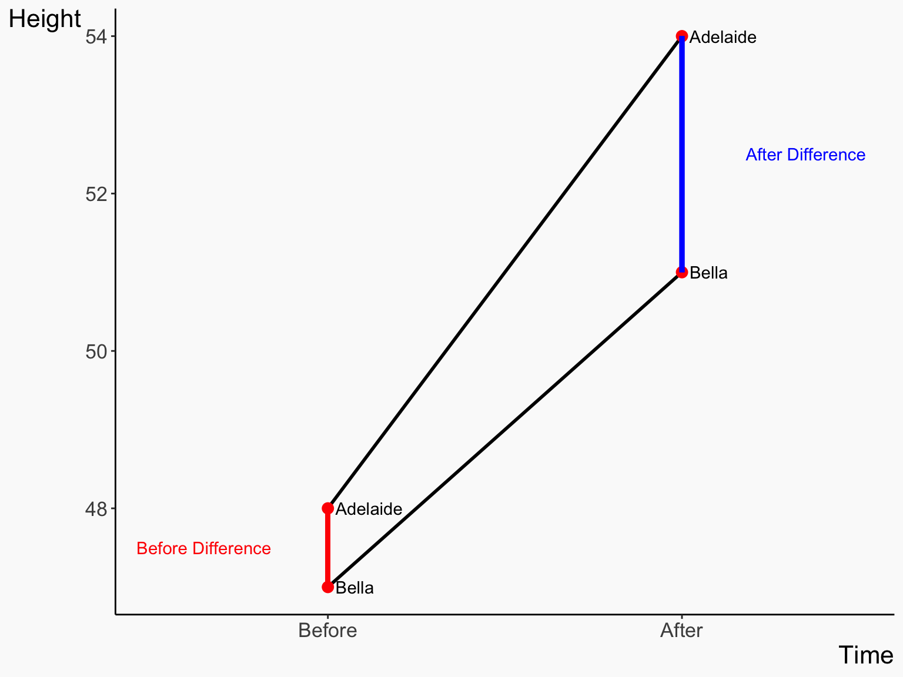
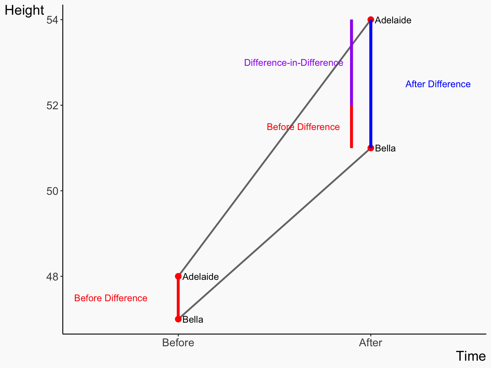
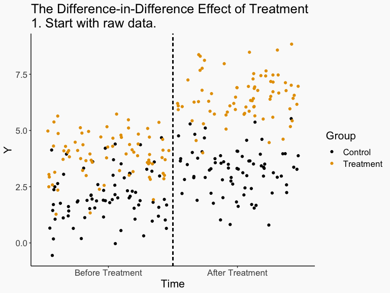

Person Time Height After Treated
1 Adelaide Before 48 FALSE TRUE
2 Adelaide After 54 TRUE TRUE
3 Bella Before 47 FALSE FALSE
4 Bella After 51 TRUE FALSE🗓️ Week 0
Presessionals
PB4A7- Quantitative Applications for Behavioural Science
18 Sep 2023
Check-in
- We’re thinking through ways that we can identify the effect of interest without having to control for everything
- One way is by focusing on within variation - if all the endogeneity can be controlled for or only varies between-individuals, we can just focus on within variation to identify it
- Pro: control for a bunch of stuff
- Con: washes out a lot of variation! Result can be noisier if there’s not much within-variation to work with
- Also, this requires no endogenous variation over time
- That might be a tricky assumption! Often there are plenty of back doors that shift over time
Difference-in-Differences
- Today we will talk about difference-in-differences (DID), which is a way of using within variation in a more deliberate way in order to identify the effect we want
- All we need is a treatment that goes into effect at a particular time, and we need a group that is treated and a group that is not
- Then, we compare the within-variation for the treated group vs. the within-variation for the untreated group
- Voila, we have an effect!
Difference-in-Differences
- Because the requirements to use it are so low, DID is used a lot
- Any time a policy is enacted but isn’t enacted everywhere at once? DID!
- Plus, the logic is pretty straightforward
- Notice it doesn’t even get a full chapter in the textbook? That’s not because it’s unimportant - it’s because it’s easy!
- Here we’ll cover the concept, next time some example studies
Difference-in-Differences
- The question DID tries to answer is “what was the effect of (some policy) on the people who were affected by it?”
- We have some data on the people who were affected both before the policy went into effect and after
- However, we can’t just compare before and after, because we have a back door path - Time! Things change over Time for reasons unrelated to Treatment
Difference-in-Differences
- Why not just control for Time? We can certainly measure that and we’ve controlled for it before!
- But we can’t! It would wash out all the variation!
- You’re either Before and Untreated, or After and Treated. So if you control for Time, you’re comparing people with the same values of Time - who must also have the same values of Treatment! So you can’t compare Treated and Untreated to get the effect
Difference-in-Differences
- The solution is to bring in a control group who is Untreated in both Before and After periods
- Now the diagram looks like this
- There’s more to control for (we have to control for Group differences too - isolate within variation), but this ALLOWS us to control for Time
Difference-in-Difference
- We control for Group by isolating within variation (comparing After to Before)
- Then we control for Time by comparing those two sources of Within variation
- We ask how much more increase was there in Treatment than control?
- The Control change is probably the increase you could have expected regardless of Treatment
- So anything on top of that is the effect of Treatment
- Now we’ve controlled for Group and Time, identifying the effect!
Example
- Let’s say we have a pill that’s supposed to make you taller
- Give it to a kid Adelaide who is 48 inches tall
- Next year they’re 54 inches tall - a six inch increase! But they probably would have grown some anyway without the pill. Surely the pill doesn’t make you six inches taller.
- SO we compare them to their twin Bella, who started at 47 inches but we DON’T give a pill to
- Next year that twin is 51 inches tall - a four inch increase. So Adelaide probably would have grown about 4 inches without the pill. So the pill boosted her by \((54 - 48) - (51 - 47) = 6 - 4 = 2\) additional inches
- “Adelaide, who was Treated, grew by two more inches than Bella, who was Untreated, did over the same period of time, so the pill made Adelaide grow by two inches”
- That’s DID!
Example
Example
Difference-in-Differences
What changes are included in each value?
- Untreated Before: Untreated Group Mean
- Untreated After: Untreated Group Mean + Time Effect
- Treated Before: Treated Group Mean
- Treated After: Treated Group Mean + Time Effect + Treatment Effect
- Untreated After - Before = Time Effect
- Treated After - Before = Time Effect + Treatment Effect
- DID = (Treated After - Before) - (Untreated After - Before) = Treatment EFfect
Concept Checks
- Why do we need a control group? What does this let us do?
- What do we need to assume is true about our control group?
- In 2015, a new, higher minimum wage went into effect in Seattle, but this increase did not occur in some of the areas surrounding Seattle. How might you use DID to estimate the effect of this minimum wage change on employment levels?
Difference-in-Difference
- Of course, this only uses four data points
- Usually these four points would be four means from lots of observations, not just two people in two time periods
- How can we do this and get things like standard errors, and perhaps include controls?
- Why, use OLS of course!
Difference-in-Differences
- We can use what we know about binary variables and interaction terms to get our DID
\[Y_{it} = \beta_0 + \beta_1After_t + \beta_2Treated_i + \beta_3After_tTreated_i + \varepsilon_{it}\] where \(After_t\) is a binary variable for being in the post-treatment period, and \(Treated_t\) is a binary variable for being in the treated group
Difference-in-Differences
- How can we interpret this using what we know?
\[Y_{it} = \beta_0 + \beta_1After_t + \beta_2Treated_i + \beta_3After_tTreated_i + \varepsilon_{it}\]
- \(\beta_0\) is the prediction when \(Treated_i = 0\) and \(After_t = 0\) \(\rightarrow\) the Untreated Before mean!
- \(\beta_1\) is the difference between Before and After for \(Treated_i = 0\) \(\rightarrow\) Untreated (After - Before)
- \(\beta_2\) is the difference between Treated and Untreated for \(After_t = 0\) \(\rightarrow\) Before (Treated - Untreated)
- \(\beta_3\) is how much bigger the Before-After difference is for \(Treated_i = 1\) than for \(Treated_i = 0\) \(\rightarrow\) (Treated After - Before) - (Untreated After - Before) = DID!
Graphically
Design vs. Regression
- Like with fixed effects, there is a distinction between regression model and research design
- We have a model with an interaction term
- Not all models with interaction terms are DID!
- It’s DID because it’s an interaction between treated/control and before/after
- If you don’t have a before/after, or you don’t have a control group, that same setup may tell you something interesting but it won’t be DID!
Example
- The Earned Income Tax Credit was increased in 1993. This may increase chances single mothers (treated) return to work, but likely not affect single non-moms (control)
- Does this program help moms get back to work?
df <- read.csv('http://nickchk.com/eitc.csv') %>%
mutate(after = year >= 1994,
treated = children > 0)
df %>%
group_by(after, treated) %>%
summarize(proportion_working = mean(work))# A tibble: 4 × 3
# Groups: after [2]
after treated proportion_working
<lgl> <lgl> <dbl>
1 FALSE FALSE 0.575
2 FALSE TRUE 0.446
3 TRUE FALSE 0.573
4 TRUE TRUE 0.491Example
- We can do it by just comparing the points, like we did with Adelaide and Bella
- This will give us the DID estimate: The EITC increase increases the probability of working by 4.7 percentage points
- But not standard errors, or the ability to include controls easily
Let’s try OLS!
did_reg
Dependent Var.: work
Constant 0.575*** (0.009)
afterTRUE -0.002 (0.013)
treatedTRUE -0.129*** (0.012)
afterTRUE x treatedTRUE 0.047** (0.017)
_______________________ _________________
S.E. type IID
Observations 13,746
R2 0.01260
Adj. R2 0.01238
---
Signif. codes: 0 '***' 0.001 '**' 0.01 '*' 0.05 '.' 0.1 ' ' 1Concept Checks
- There are four coefficients on the previous slide. Interpret them carefully in a sentence each.
- Why can the \(After \times TreatedGroup\) interaction stand in for \(Treated\) ?
More!!
- You can recognize \(After_t\) and \(Treated_i\) as fixed effects
- \(Treated_i\) is a fixed effect for group - we only need one coefficient for it since there are only two groups
- And \(After_t\) is a fixed effect for time - one coefficient for two time periods
- You can have more than one set of fixed effects like this! Our interpretation is now within-group and within-time
- (i.e. comparing the within-group variation across groups)
More!!
- We can extend this to having more than two groups, some of which get treated and some of which don’t
- And more than two time periods! Multiple before and/or multiple after
- We don’t have a full set of interaction terms, we still only need the one, which we can now call \(CurrentlyTreated_{it}\)
- If you have more than two groups and/or more than two time periods, then this is what you should be doing
More!!
- Let’s make some quick example data to show this off, with the first treated period being period 7 and the treated groups being 1 and 9, and a true effect of 3
did_data <- tibble(group = sort(rep(1:10, 10)),
time = rep(1:10, 10)) %>%
mutate(CurrentlyTreated = group %in% c(1,9) & time >= 7) %>%
mutate(Outcome = group + time + 3*CurrentlyTreated + rnorm(100))
did_data# A tibble: 100 × 4
group time CurrentlyTreated Outcome
<int> <int> <lgl> <dbl>
1 1 1 FALSE 1.50
2 1 2 FALSE 2.43
3 1 3 FALSE 3.70
4 1 4 FALSE 5.75
5 1 5 FALSE 4.57
6 1 6 FALSE 6.47
7 1 7 TRUE 11.1
8 1 8 TRUE 12.6
9 1 9 TRUE 12.6
10 1 10 TRUE 13.6
# ℹ 90 more rowsMore!!
# Put group first so the clustering is on group
many_periods_did <- feols(Outcome ~ CurrentlyTreated | group + time, data = did_data)
etable(many_periods_did) many_periods_did
Dependent Var.: Outcome
CurrentlyTreatedTRUE 3.095*** (0.4991)
Fixed-Effects: -----------------
group Yes
time Yes
____________________ _________________
S.E.: Clustered by: group
Observations 100
R2 0.96131
Within R2 0.34238
---
Signif. codes: 0 '***' 0.001 '**' 0.01 '*' 0.05 '.' 0.1 ' ' 1Downers and Assumptions
- So… does this all work?
- That example got pretty close to the truth of 3 but who knows in other cases!
- What needs to be true for this to work?
Does it Work?
- This gives us a causal effect as long as the only reason the gap changed was the treatment
- If Adelaide would have grown six inches anyway, then the gap would have grown by 2, pill or not. The pill did nothing in that case! But we don’t know that and mistakenly say it helped her grow by 2
- In fixed effects, we need to assume that there’s no uncontrolled endogenous variation across time
- In DID, we need to assume that there’s no uncontrolled endogenous variation across this particular before/after time change
- An easier assumption to justify but still an assumption!
Parallel Trends
- This assumption - that nothing else changes at the same time, is the poorly-named “parallel trends”
- Again, this assumes that, if the Treatment hadn’t happened to anyone, the gap between the two would have stayed the same
- Sometimes people check whether this assumption is plausible by seeing if prior trends are the same for Treated and Untreated - if we have multiple pre-treatment periods, was the gap changing a lot during that period?
- Sometimes people also “adjust for prior trends” to fix parallel trends violations, or use related methods like Synthetic Control (these are outside the scope of this class)
Prior Trends
- Let’s see how that EITC example looks in the leadup to 1994
- They look like the gap between them is pretty constant before 1994! They move up and down but the gap stays the same. That’s good.
Prior Trends
- Formally, prior trends being the same tells us nothing about parallel trends
- But it can be suggestive. Going back to the height pill example, what if instead of comparing Adelaide and Bella, child twins, we compared Adelaide to me?
- Seeing the gap closing anyway in previous years would be a pretty good clue that it’s not just the pill
Parallel Trends
- Just because prior trends are equal doesn’t mean that parallel trends holds.
- Parallel trends is about what the before-after change would have been - we can’t see that!
- For example, let’s say we want to see the effect of online teaching on student test scores, using COVID school shutdowns to get a Before/After
- As of March/April 2020, some schools had gone online (Treated) and others hadn’t (Untreated)
- Test score trends were probably pretty similar in the Before periods (Jan/Feb 2020), so prior trends are likely the same
- But LOTS of stuff changed between Jan/Feb and Mar/Apr, like, uh, Coronavirus, lockdowns, etc. not just online teaching! SO parallel trends likely wouldn’t hold
Concept Checks
- Go back to the Seattle minimum wage effect example from the first Concept Check slide. Clearly state what the parallel trends assumption means in this context.
- It’s possible (although perhaps unlikely) that parallel trends can hold even if it looks like the treatment and control groups were trending apart before treatment went into effect. How is this possible?
And a Warning!
- One other note about DID is that its popularity is relatively recent, as things go, so we’re still learning a lot about it!
- Most relevant has to do with staggered rollout DID
- You may have noticed that the OLS version of DID doesn’t necessarily need to have treatment applied at one particular time
- Say Washington gets treated in 2017, then California in 2018 - we can use these both as Treated groups and just use the same two-way fixed effects, right?
- Well… that’s what we thought for a long time. And you’ll see a LOT of published studies doing this. But it turns out to actually bias results by quite a lot
- There are more complex modern estimators for staggered rollout DID (say, in the did package), but they’re a bit much to go into for this class
- For now, stick to DID designs where all the Treated groups are treated in the same period

PB4A7- Quantitative Applications for Behavioural Science